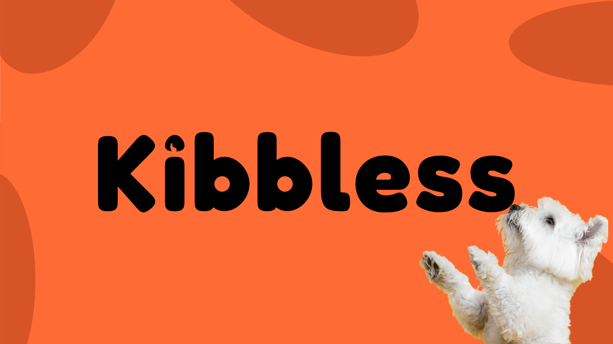
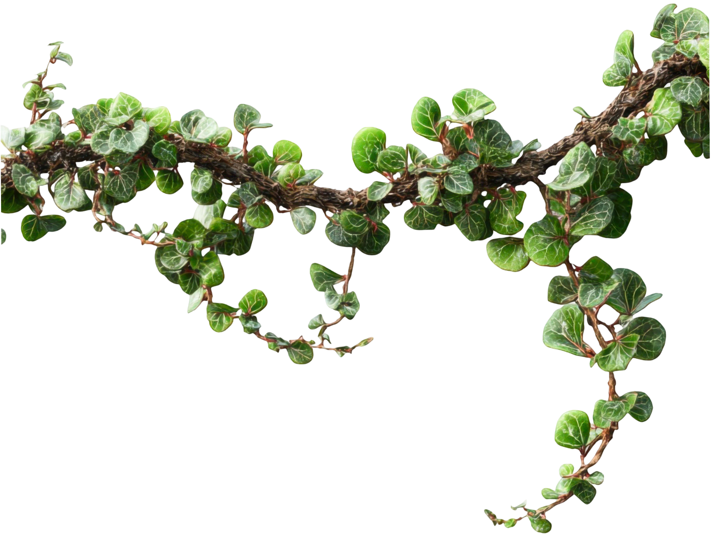
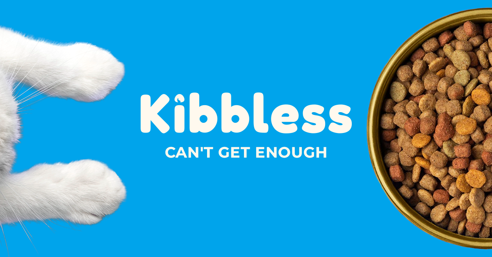
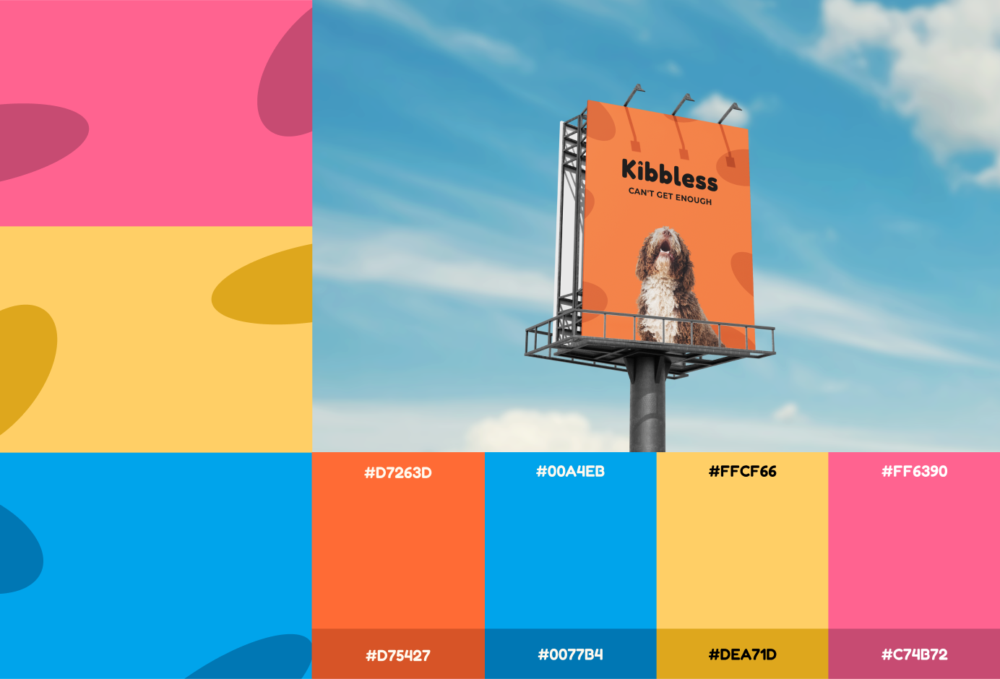
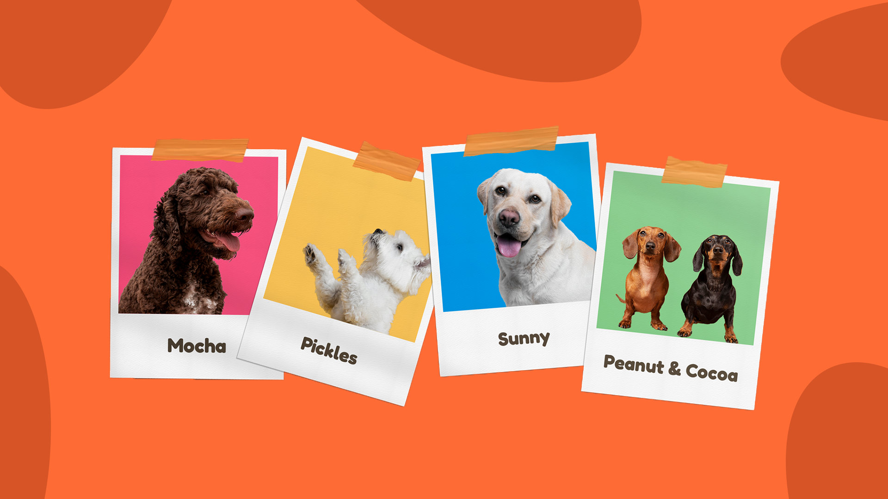
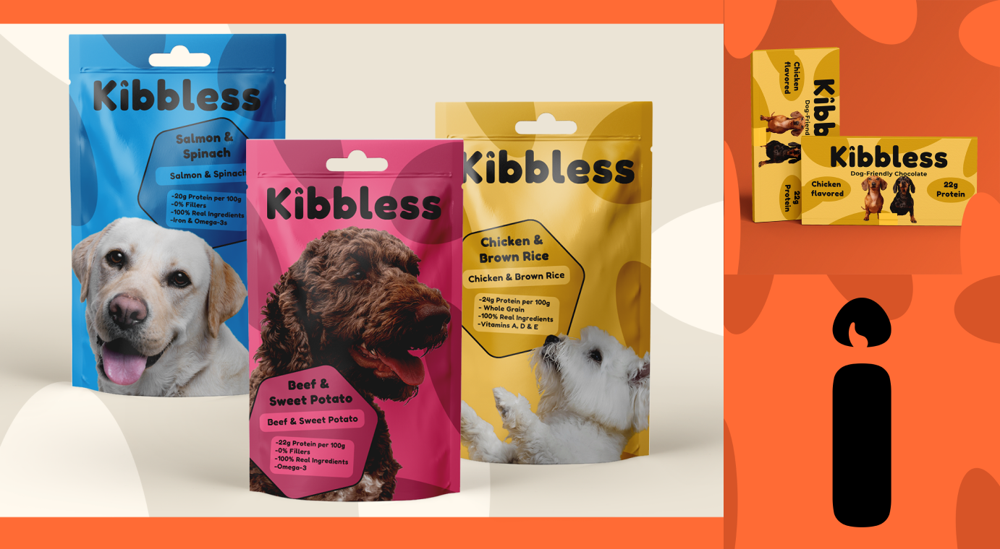
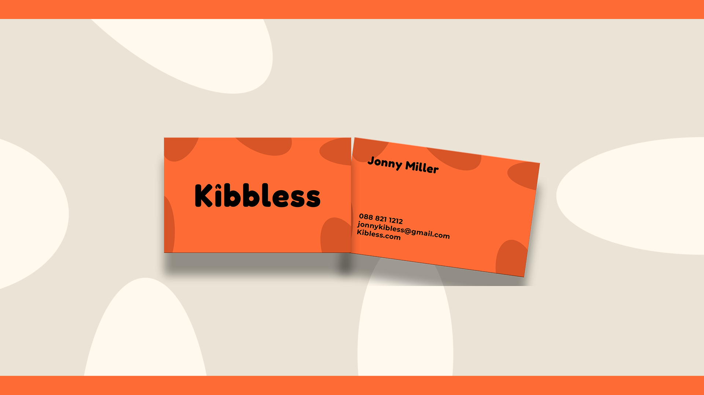
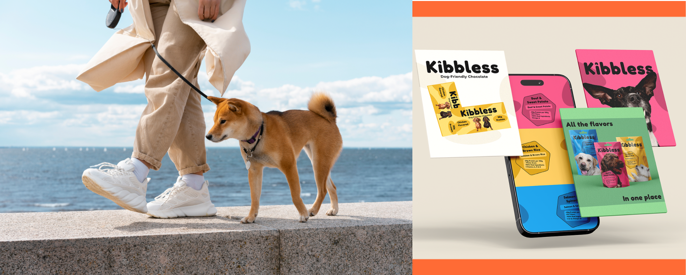
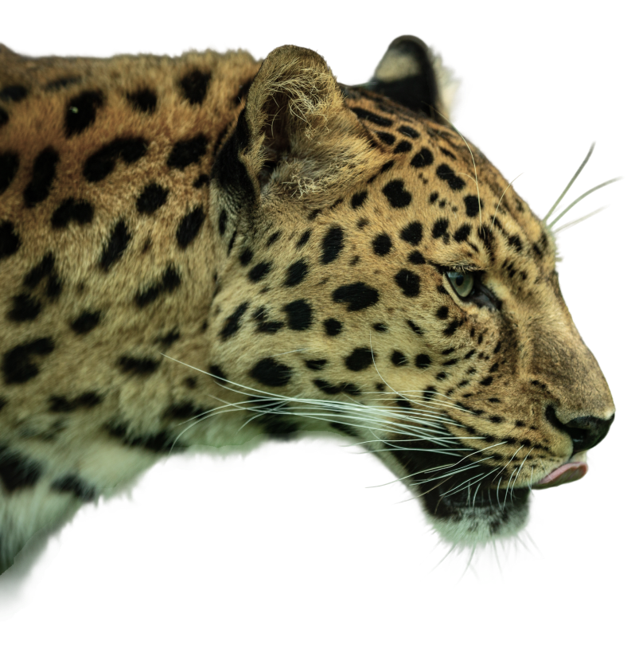

Kibbless is about reclaiming the joy of the bowl with a clean, modern bite. It's where uncompromising wellness meets playful energy - a reminder that nourishing your best friend should be an upbeat, worry-free experience. Rooted in the belief that simplicity is the ultimate form of quality, the brand celebrates 100% organic, protein-rich ingredients that fuel every wag, run, and leap. Kibbless isn't just about filling a dish; it's about honoring the bond between pets and their people by swapping fillers for flavor and mystery for transparency. It's a modern take on nutrition designed for a happier, healthier life - one legendary meal at a time.




The pet food industry is often a maze of over-processed ingredients and clinical, uninspired branding. For Kibbless, the challenge was to disrupt the "brown bag" monotony. We needed to bridge the gap between high-end organic nutrition and a brand personality that actually feels as joyful as a dog at dinnertime. The goal was to create a visual and verbal identity that screams "premium quality" without losing the approachable, vibrant spirit that modern pet parents crave.

We developed a brand ecosystem that balances "Trustworthy" with "Playful." By utilizing a bold, friendly typographic style and a vibrant color palette, Kibbless stands out on the shelf as a beacon of health. The strategic focus remained on the "100% Organic" promise, ensuring that the simplicity of the ingredients was reflected in the clean, modern design. The name itself- Kibbless - was positioned as a cheeky nod to the fact that this is more than just basic kibble; it is a holistic wellness experience full of personality.

Kibbless stands as a testament to the fact that healthy eating doesn't have to be boring. It is a brand designed for the conscious pet parent who refuses to settle for "standard." By prioritizing protein-rich craft and thoughtful nutrition, Kibbless ensures that every dog isn't just fed, but is truly thriving. In every treat and every bowl, Kibbless reflects a world where nutrition is clean, joyful, and purposeful.

RETURN

